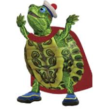

(edit text) Turtle Tuck (voiced by Teala Dunn) is a turtle and the second oldest of the Wonder Pets.[14] He is sensitive with an emotional connection to living things and the heart of the group. As a superhero, he wears a white sailor's cap, blue Aquasocks, and a red cape. Tuck is empathetic, often wanting to give the rescued animals a hug or keeping them company while Linny and Ming-Ming put their rescue plan into action. He has keen observational skills and can spot things from long distances, which usually garners him the compliment, "Good eye, Tuck!". He has an older cousin named Buck, whose cool demeanor and many skills make Tuck jealous.